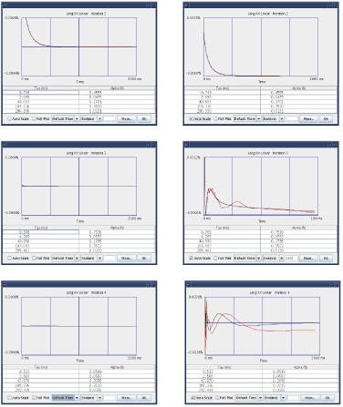
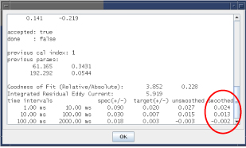
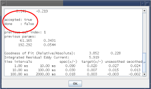
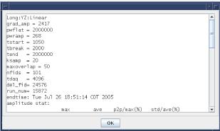

- 00000018WIA30137640GYZ
- id_20144994.0
- Feb 21, 2021 9:06:08 PM
Grafidy - Eddy current data display
The goal of eddy current compensation is to minimize unwanted magnetic fields produced by eddy currents generated when pulsing the gradient coil.
The goal of eddy current compensation is to minimize unwanted magnetic fields produced by eddy currents generated when pulsing the gradient coil. During the compensation process, the magnetic field is measured as a function of time and location, and the zero order (B0) and first order (linear) spatial components are derived. The system resonant frequency is then changed in time as a function of applied gradients to track the B0 component. The gradient waveforms driven through the gradient coil are altered as a function of time to minimize the unwanted linear magnetic fields.
As a default, Grafidy 3 displays a matrix of cells sorted by component type and iteration number. In these cells are values representing the peak deviations of the residual field error curve within predefined time ranges. The tool stores the residual field error curves and they can be displayed.
- To display a curve, select a filled-in cell and click the Show button.
- The measured data is plotted in red and the best-fit curve is plotted in black. The best-fit curve parameter values (exponential time constants and amplitudes) are listed below the plot.
Interpeting grafidy plots below shows an example of the how the residual field error curve reduces during the compensation process. These plots show data resulting from three consecutive iterations (2–4). The Auto Scale function adjusts the vertical scale to minimum and maximum value of the data. The plots on the left side of the figure are shown with the Auto Scale function off so that all three curves are shown with the same vertical scale. As shown, the amount of residual field error decreases. The plots on the right side of the figure show the same data as shown on the left side except the Auto Scale function is on. In this case, the maximum value for the second iteration is 0.68, the third iteration is 0.02, and the fourth iteration is 0.002.

When the residual field error curve is being displayed, you can access additional information related to the data collected by selecting the More button. A window displays with a slider bar providing access to all of the provided information. The image below shows an example of the output reporting the coil positions relative to the center of the gradient coil. The two coils along the axis of the selected component are shown. The first column of position values lists the X, Y, and Z location of one coil in centimeters. The second column lists the X, Y, and Z location of the second coil in centimeters.

The image below shows an example of the output of the pass/fail specifications, target values, peak deviation of the unsmoothed data, and peak deviation of the smoothed data for each time interval. The tool uses the results from the smoothed curve to determine pass/fail status. These are the same values shown in the matrix cell.

The magnitude data summary shows an example of the output of information related to the raw data collected when performing long mode. These values are not reported for short and very long mode data. Data is reported summarizing the characteristics of the free induction delay (FID) magnitudes collected from each coil.

| Data Field | Description |
| A+ | Data from the first coil when a positive gradient was applied. |
| A- | Data from the first coil when a negative gradient was applied. |
| B+ | Data from the second coil when a positive gradient was applied. |
| B- | Data from the second coil when a negative gradient was applied. |
| Max | Maximum value of the FID magnitude curve. This value gives an indication of the signal strength. |
| Min | Minimum value of the FID magnitude curve. This value gives an indication of the signal level at the end of the FID. |
| Max/Min | Ratio of the two values. This value is related to the T2* of the sample. |
- The first column of data shows the maximum value of the item from the family of curves (all of the FIDs from that coil using the particular gradient polarity).
- The second column is the mean value of the item from the family of curves.
- The third column lists the normalized peak-to-peak percent deviation of initial magnitude signal. This value gives an indication of the relative value of the T1 (longitudinal spin relaxation time) of the sample and the TR used by the pulse sequence (time between consecutive RF pulses). A small value indicates that sufficient time was provided to allow the sample to relax.
- The fourth column gives the normalized value of the variation (standard deviation) of the signals from the family of curves.
Previous calibration parameters shows the output of the calibration parameter values (previous parameters) used to collect the selected residual field error curve.

- The first column gives the time constant values in milliseconds.
- The second column gives the associated amplitudes in percent applied gradient.
- The number of rows indicates the number of exponentials used to compensate the component.
Calibration state shows an example of the output of the calibration state of this iteration. The accepted state indicates whether the tool or the user applied the best-fit calibration parameters to the system.

- If the accepted state is true, this indicates that the new values were accepted and downloaded to the system calibration files. Auto mode downloads new values into the system calibration file.
- If the accepted state is false, this indicates that the new values were not downloaded to the system. Auto mode does not download new values into the system calibration file.
- If the return value is done, this indicates whether Auto mode completed its scan and properly loaded.
The image below shows an example of the output of the list of scan parameters used to collect the residual field error curves.

| Scan Parameters | Output |
| grad_amp | The amplitude of the eddy current producing gradient in 1000 G/cm (for example, 1500 = 1.5 G/cm) |
| pwflat | The duration of the flattop of the eddy current producing gradient in usec. |
| pwramp | The duration of the ramp (both up and down) of the eddy current producing gradient in usec. |
| start | The time point of the first data collected in usec relative to the end of the flattop of the eddy current producing gradient. |
| tbreak | The time point in usec related to when the FID spacing converts from linear to exponential spacing. |
| tend | The maximum time point collected relative to the end of the flattop of the eddy current producing gradient. |
| maxoverlap | The maximum percentage of FID overlap allowed (long mode). |
| nfids | The total number of FIDs collected. |
| tdag | The duration of the data acquisition period in usec. |
| run_num | The name of the associated raw data file (/usr/g/mrraw/P'run_num'.7). |